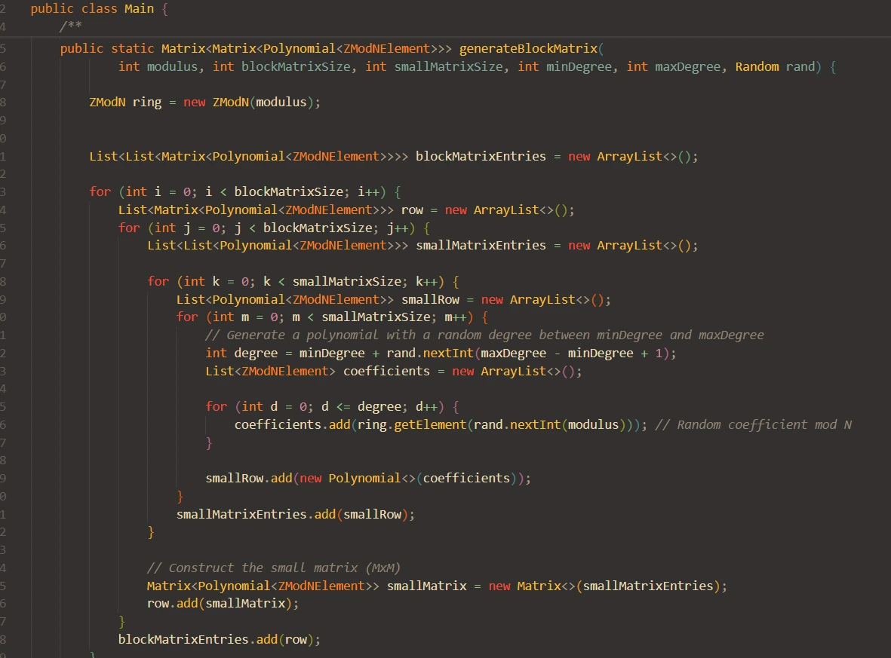

Mathematical Computing with Java Generics
This project demonstrates advanced Java implementation skills within a pre-designed mathematical computing framework used in professional software systems for finance, engineering, and scientific computing. My contribution focused on implementing the core Matrix class while working with complex generic type systems and mathematical abstractions designed by others.
The project required deep understanding of Java's generic programming capabilities, implementing the Matrix<T> class to work with any type that implements RingElement. This involved mastering complex nested generic types, proper inheritance from RingElement<Matrix<T>>, and maintaining consistency with established codebase patterns while ensuring type safety throughout the implementation.
The existing framework provided a sophisticated directory structure encompassing algebraic structures (Groups, Rings, Monoids), constructive mathematics (Matrix, Polynomial), and specific implementations (ZModN elements). Working within this architecture required understanding mathematical concepts like ring theory and how they translate to object-oriented design patterns.
My main contribution was implementing the generic Matrix class according to provided specifications. This included basic getters (getNumRows(), getNumCols(), getElement()), mathematical operations (one(), zero(), additiveInverse()), and proper constructor initialization from List<List<T>> elements. Each method required careful attention to generic type handling and maintaining immutability with final fields.
The project provided hands-on experience with Java's most advanced generic programming concepts. I successfully navigated complex type parameters, understood how matrices can contain other matrices or polynomials, and implemented proper error handling for edge cases while following the established immutable design patterns used throughout the framework.
This project simulated real-world professional software development scenarios where developers work within existing frameworks and architectural patterns. I demonstrated the ability to understand complex requirements, follow established conventions, integrate components properly with existing systems, and maintain code quality while implementing sophisticated mathematical concepts.
Originally this was an assignment for my CSE-235 course, but it became one of my technically impressive projects. This implementation demonstrates mastery of advanced Java concepts including generic programming with complex type parameters, abstract mathematical thinking, framework integration patterns, and professional code implementation practices. The project showcases practical applications of theoretical computer science concepts in mathematical software development.
The implementation required understanding mathematical structures (rings with addition and multiplication operations), generic type systems (working with parameterized types and constraints), nested structures (matrices containing other mathematical objects), and framework patterns (following established design conventions for mathematical software systems).
This project provided invaluable experience implementing components within sophisticated frameworks, demonstrating the ability to understand complex requirements and deliver working code that integrates properly with existing systems. It represents the kind of implementation work common in professional software development environments where mathematical precision meets software engineering excellence.